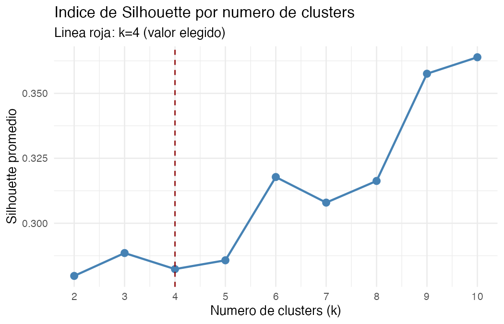
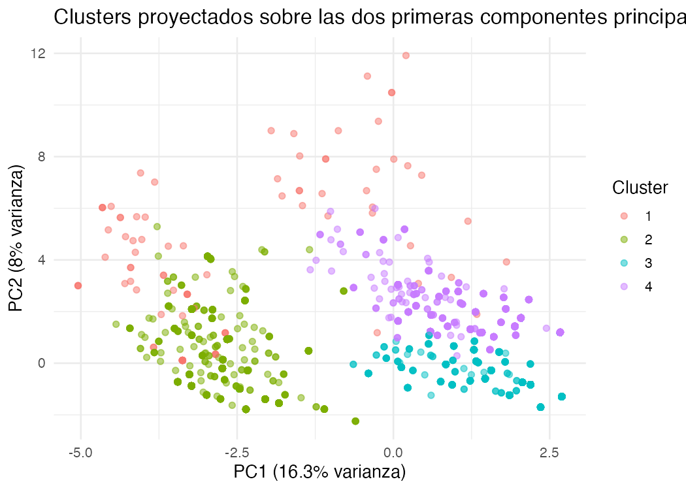
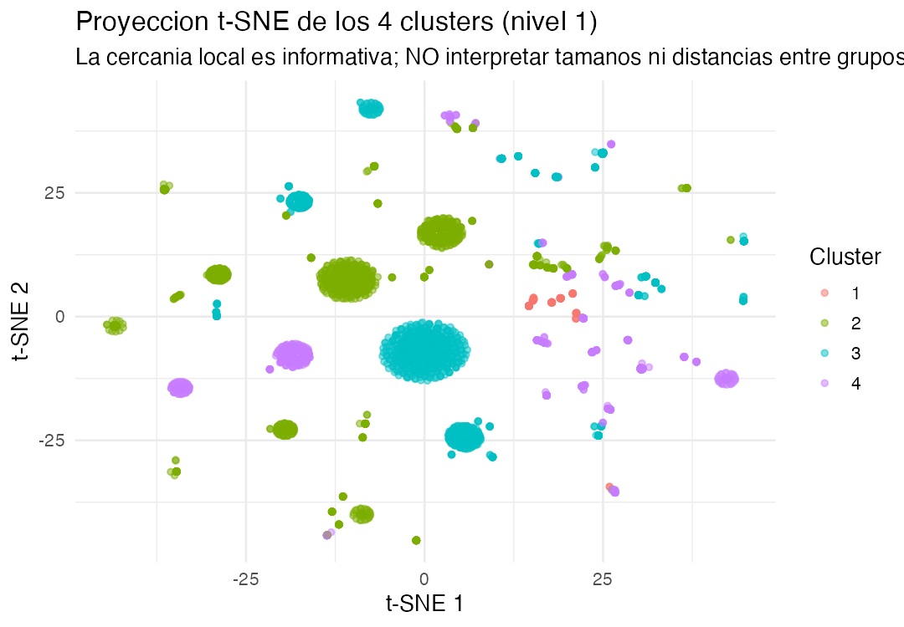
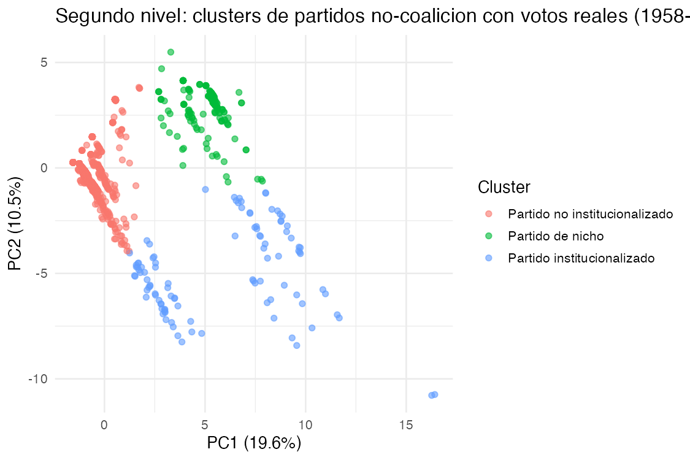
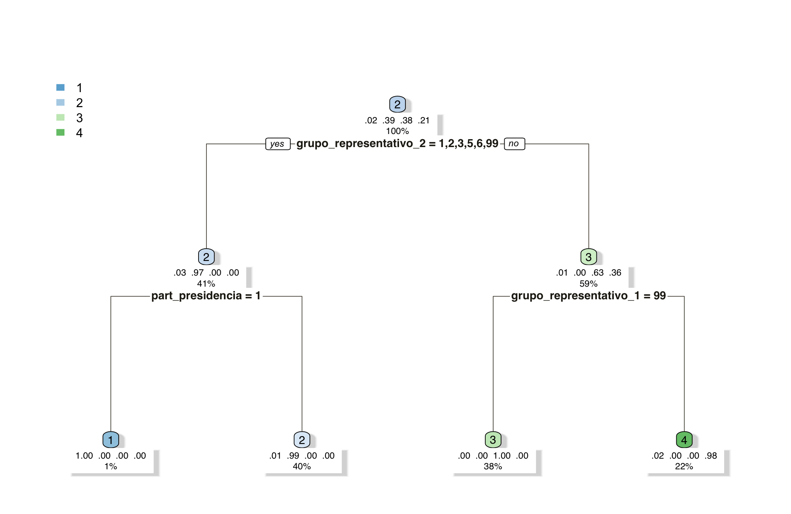

El individuo, no el bloque, es la unidad de análisis
Casi toda inteligencia política agrupa primero por categoría — partido, ideología, generación — y describe personas a partir de esa etiqueta. ORIÓN invierte el orden: observa la trayectoria de cada actor político como una secuencia propia de decisiones y cargos, y deja que las tipologías emerjan de esos datos. La categoría deja de ser el punto de partida y pasa a ser, cuando aparece, un resultado del análisis.
Aplicado: el módulo ADN Político de PDT-Colombia
Este marco no es sólo teoría — es el motor detrás del módulo ADN Político del Political Digital Twin de Colombia. Sobre 101.209 trayectorias individuales (1958–2023) se corrió un K-Means de dos niveles usando únicamente variables de comportamiento y cargo, sin usar el nombre del partido como insumo. Las 4 tipologías que resultaron —y sus subtipos reales por votación— son exhibidas abajo, con las figuras generadas directamente en R sobre el modelo entrenado.
Ver el caso completo en PDT-Colombia →Salidas del modelo entrenado, sin retoques



